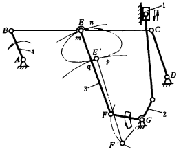
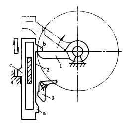
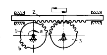

机构示意图
机构特性简介
滑块上下端停歇移动机构

图中曲柄连杆机构ABCD的连杆BC在主动曲柄4的带动下作平面复杂运动，其上E点的轨迹在mn、qp段均与以 EF为半径的圆弧近似，圆弧的中心分别为F、F'，在 FF'线段的垂直平分线上取G点，设置绕G点摆动的摆杆2，并用2来带动滑块1作上、下端有停歇的往复移动。 该机构用于喷气织机开口机构中，利用滑块在上下端位置上的停歇引入纬纱。
重力急回间歇式移动机构

主动转臂1通过从动件2的上凸耳b将2抬升，2升至下凸耳a被摆动挡块3钩住，l与b脱离，2停止不动。转臂1继续转动到与3接触时使挡块3与2脱钩， 2以自身重力下落被机架上的凸台4挡住2上的凸耳c，2停歇不动。然后再由转臂抬起凸耳b继续下一循环。该机构具有上、下不等时的停顿和快速下落的急回特点。
不完全齿轮往复移动间歇机构

不完全齿轮1作主动件顺时针转动，用其轮齿交替地与从动齿条2及不完全齿轮3啮合，可使齿条作间歇往复移动。当齿轮1的a部分轮齿在顺时针转动时先与齿条啮合使之右移；脱开后，齿条有短暂的停歇。当a部轮齿与齿轮3啮合时，齿轮3将带动齿条左移；脱开后，齿条再次停歇。b部轮齿转至a的初始位置后重复a的动作一次。结果主动齿轮1每转一周从动齿条往复移动二次。改变轮1上的齿数可调节齿条在两端的停歇时间。 不完全齿轮机构在啮合开始和脱离啮合时均有冲击，故只适用于低速轻载，如印刷机等。